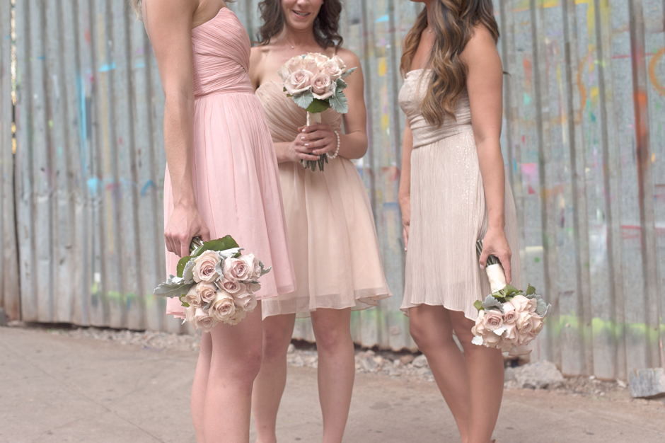
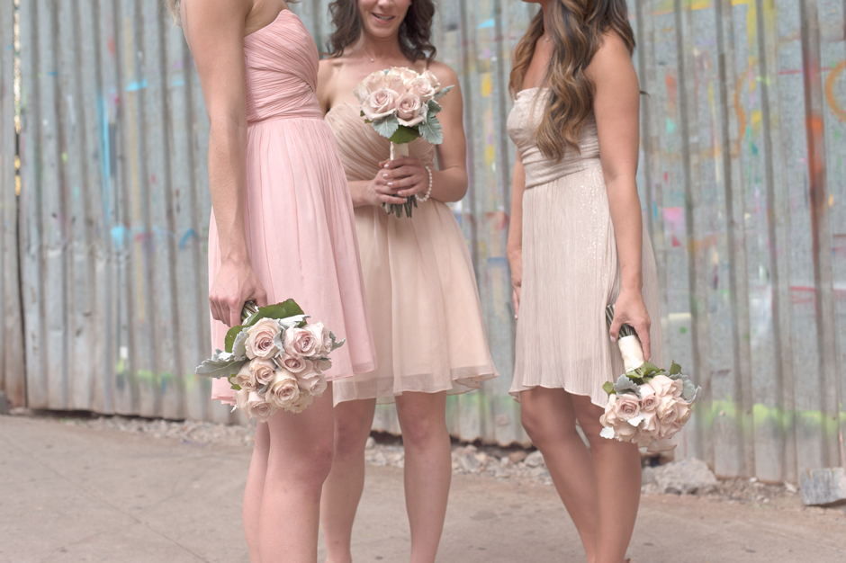

karen + josh in brooklyn bridge park
Shot on a face-meltingly hot (and cheerily sunny) summer afternoon, Karen and Josh's wedding was full of beautifully heartfelt personal touches, from the ceremony archway built lovingly by friends to a time capsule that they'll be opening on their first wedding anniversary. The ceremony was held outdoors at Brooklyn Bridge Park, with the reception party moving onto rebar in nearby DUMBO. Loved shooting the soft, peachy-pink touches in this wedding (and the super adorable flower girl). Best wishes, Karen and Josh!
[Images shot while assisting Levi Stolove. Thanks, Levi!]


 
